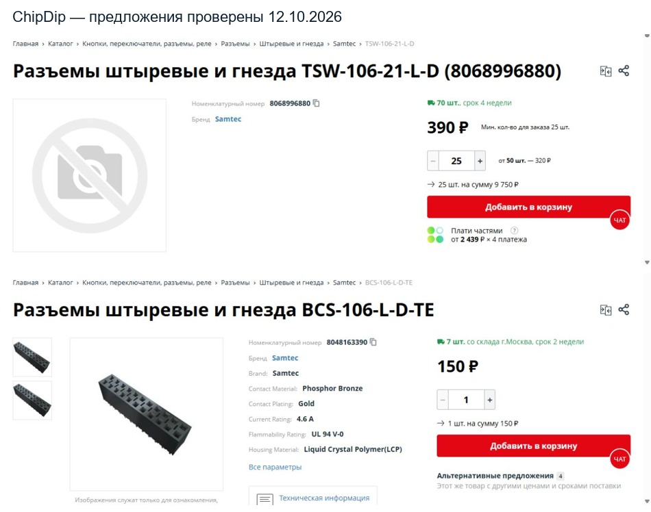

Проверено 12 октября 2026. Подбор для согласования. Схема, платы, стойки и BOM не изменены.
| Деталь | Цена | Наличие и срок на карточке | Минимум |
|---|---|---|---|
| Samtec TSW-106-21-L-D — длинная вилка 2×6 | 390 ₽/шт. | 70 шт. у поставщика, 4 недели | 25 шт. |
| Samtec BCS-106-L-D-TE — розетка 2×6 | 150 ₽/шт. | 7 шт. со склада Москвы, 2 недели | 1 шт. |
Стоимость использованных деталей: 540 ₽ на сборку. Для пяти устройств требуется заказать 25 вилок и 5 розеток: 10 500 ₽ без доставки, 20 вилок останется.
Обе детали — выводные, шаг 2,54 мм, квадратный штырь 0,635 мм. Samtec документирует сопряжение BCS с TSW. Ток соединения достаточен для проектного требования 0,5 А на контакт; паспортные токи не складываются между параллельными контактами.
| Геометрия | Размер |
|---|---|
| Расстояние между рабочими поверхностями POWER и LOGIC | 36,020 мм |
| Высота кончика вилки от POWER | 2,540 + 30,988 = 33,528 мм |
| Высота розетки | 7,366 мм |
| Номинальная глубина ввода | 4,874 мм |
| Паспортный диапазон BCS | 4,3434–7,239 мм |
| Зазор корпуса розетки до верхней поверхности экрана | 8,634 мм |
Штыри пересекают экран; оба пластиковых корпуса находятся вне его плоскости. После согласования потребуются изолированные проходные отверстия и удаление меди вокруг них. Сигнальные штыри не соединяются с экраном.
Ограничение размерной проверки: высоты пластиковых корпусов указаны изготовителем как REF. Их измерение обязательно. При приёмке корпуса вилки 2,540±0,100 мм, корпуса розетки 7,366±0,100 мм и собранного зазора 36,020±0,100 мм, с паспортным допуском поста ±0,2032 мм, ввод получается 4,3708–5,3772 мм — внутри допустимого окна, но запас до нижнего предела всего 0,0274 мм. Поэтому независимый обзор рекомендует непосредственно проверять ввод каждого штыря в диапазоне 4,50–7,00 мм. Это наши требования к приёмке, а не обещанные допуски стоек. Наклон длинных контактов и совмещение отверстий экрана проверяются отдельно; окончательная сверловка пока не утверждена.
Документы изготовителя: TSW, BCS, сопряжение и глубина ввода BCS.
Более дешёвый запасной вариант: AliExpress E-SIMPO L35mm A3C6, 2×6P (1449 ₽ за 50 шт., остаток 99+, доставка почтой 363 ₽) + SSW-106-01-G-D (570 ₽, 17 шт., 5–6 недель). Закупка для пяти устройств 4299 ₽ без доставки. Номинально высота подходит (ввод 4,489 мм), но сечение контакта точного SKU Ali не документировано, поэтому эта пара не признана полностью подтверждённой.
DAN имеет обычные короткие вилки и розетки; подтверждённая длинная вилка на текущую высоту сборки не найдена. На Ozon просмотренные предложения оказались короткими.
